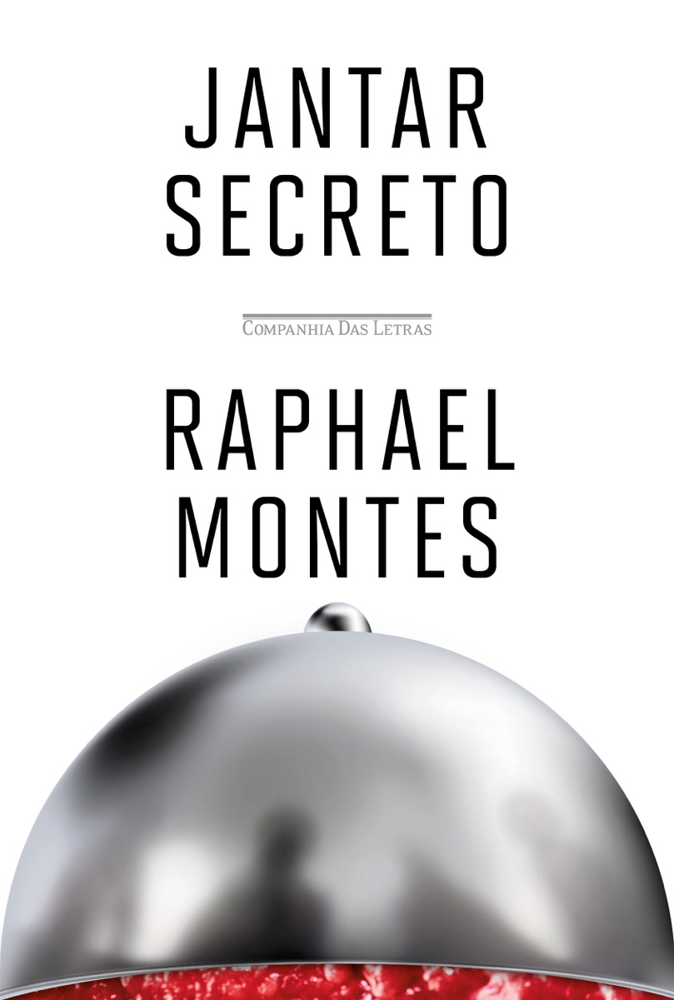
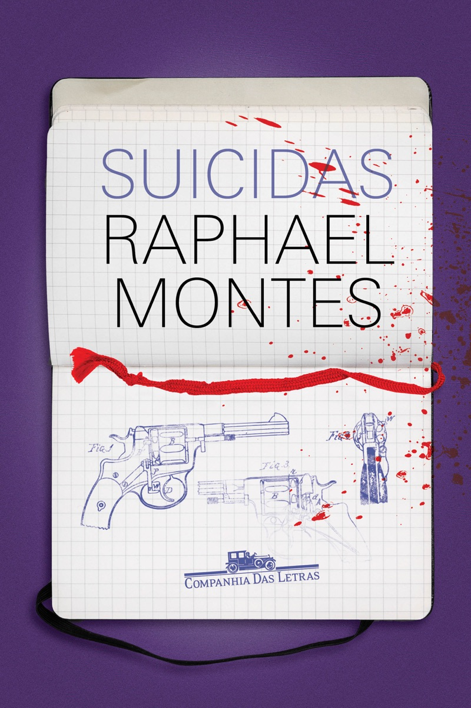
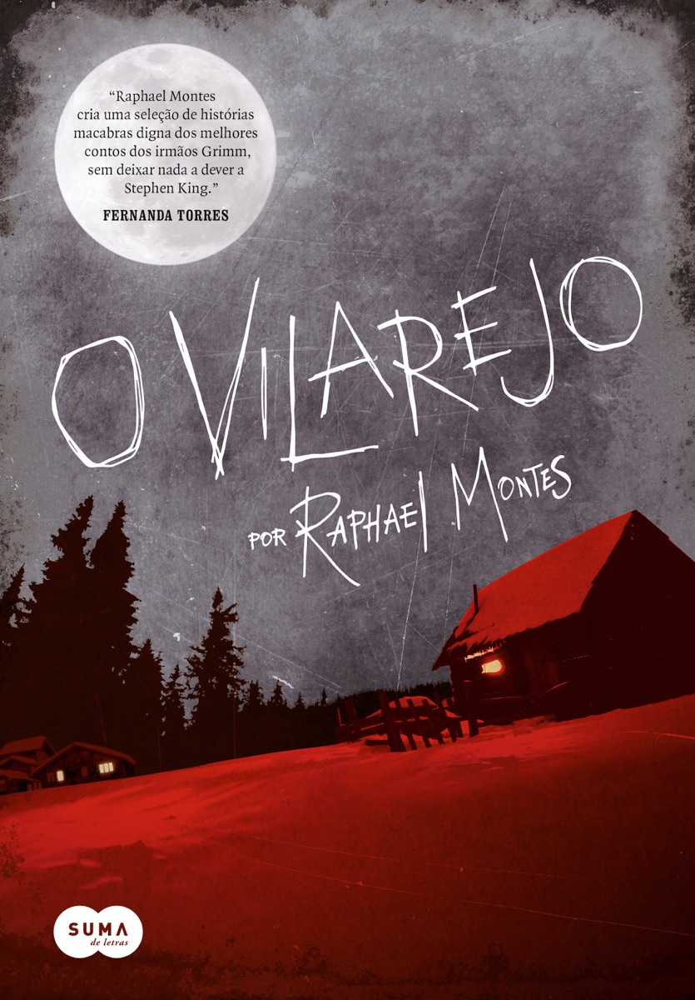

Por qual livro
começar a ler Raphael Montes
suspense
brasileiro
Raphael Montes.
O autor de suspense que mais aparece nas estantes de quem usa o Livra.
Raphael Montes168
Freida McFadden146
Stephen King85
Riley Sager54
Agatha Christie53
Livros de cada autor nas estantes do Livra, em 30/10.
Se você quer o que todo mundo tá lendo:

Jantar Secreto
★ 3,9no Livra · 11 avaliações
O dele que mais aparece nas estantes: 49.
Amigos de uma cidade pequena do Paraná vão morar no Rio e começam a organizar jantares secretos. O problema é o cardápio.
Se você quer o mais bem avaliado:

Suicidas
★ 4,8no Livra · 5 avaliações
O primeiro livro dele, de 2012.
Nove adolescentes morrem numa aparente roleta-russa. As mães leem as anotações de um deles para entender o que aconteceu.
Se você tem medo de livro grosso:

O vilarejo
★ 3,8no Livra · 7 avaliações
O mais curto desta lista.
Sete histórias ligadas num vilarejo isolado no frio. Cada uma é um pecado capital, e cada pecado tem o seu demônio.
Se você viu a série:
Bom dia, Verônica
★ 4,3no Livra · 6 avaliações
Escrito com a criminóloga Ilana Casoy.
Verônica trabalha na Delegacia de Homicídios de São Paulo e decide investigar por conta própria. Virou série da Netflix.
Se você quer o premiado:
Uma mulher no escuro
★ 3,8no Livra · 3 avaliações
Jabuti 2020
Victoria é a única sobrevivente de um crime de vinte anos atrás. Agora o assassino voltou.
Manda pra quem acha que suspense bom só vem traduzido.
Qual foi o seu primeiro Raphael Montes?
Salva pra escolher
o próximo.